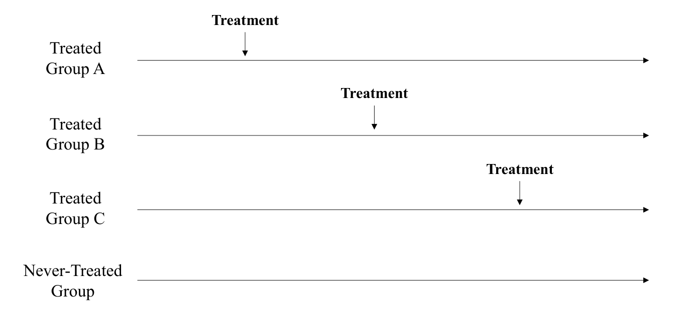
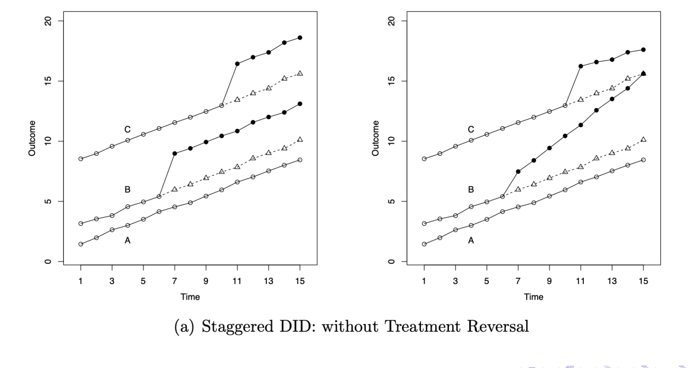
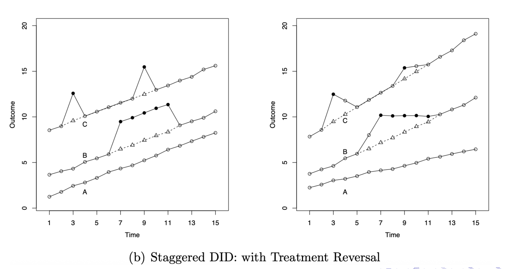

본 포스트는 서울대학교 GSDS Sanghack Lee(이상학) 교수님의 Causal Inference 강의 자료(Staggered Difference-in-Differences 편, Causality Lab, 2025년 6월 17일)를 바탕으로, 강의를 처음 듣는 독자도 논리적 흐름을 따라갈 수 있도록 재구성한 것입니다. 원본 슬라이드는 Callaway의
did패키지 문서(multi-period-did vignette)에서 부분 발췌했으며, Athey & Imbens (2022, JoE), Baker, Larcker & Wang (2022, JFE), Callaway & Sant’Anna (2021, JoE), Chiu, Lan, Liu & Xu (2023, arXiv:2309.15983), Goodman-Bacon (2021, JoE), Wing, Yozwiak, Hollingsworth, Freedman & Simon (2024, Annual Review of Public Health)의 결과를 인용합니다. 2×2 설계에서의 이중차분 식별 논리와 평행추세 가정은 21강 Differences in Differences에서 다루었으며, 그 회차의 부록 C · D에서 예고만 하고 넘어갔던 시차 처치 도입(staggered adoption) 문제를 이번 회차에서 본격적으로 전개합니다.
한 줄 요약 (TL;DR)
“처치 시점이 단위마다 다를 때 TWFE 회귀가 무너지는 이유는 그것이 ’이미 처치받은 단위’를 통제집단으로 끌어다 쓰기 때문이며, 해법은 새 추정량이 아니라 좋은 비교만 남기는 것이다.”
21강의 DiD는 집단 2개 · 시점 2개라는 정갈한 세계 위에 세워져 있었습니다. 현실의 정책은 그렇게 도입되지 않습니다 — 주(state)마다, 지역마다, 기업마다 시행 시점이 다르게 점진적으로 확산(roll-out)되지요. 이 상황을 그대로 TWFE 회귀에 넣으면 계수 \(\tau\)는 가능한 모든 2×2 비교의 가중평균이 되고, 그 안에는 후기 처치군을 조기 처치군과 비교하는 항이 섞여 들어옵니다. 이미 처치효과가 반영된 단위를 통제집단으로 쓰는 셈이니, 처치효과가 시간에 따라 변하거나(동적) 단위에 따라 다르면(이질적) 추정치가 왜곡되고 심하면 부호까지 뒤집힙니다. Callaway & Sant’Anna (2021)의 답은 놀랍도록 단순합니다. 하나의 계수를 추정하려 애쓰는 대신, “\(g\)기에 처음 처치받은 집단의 \(t\)기 효과”인 집단-시점별 ATT \(\mathrm{ATT}(g,t)\)를 통제집단을 미처치(never-treated) 또는 아직 미처치(not-yet-treated)로 제한해 각각 식별한 뒤, 필요에 따라 집단별 · 노출기간별 · 전체로 다시 집계하는 것입니다. 하나의 숫자를 먼저 정하고 그 안을 들여다보는 대신, 정직하게 식별되는 조각들을 먼저 만들고 나중에 합치는 순서의 전환이 이 방법의 전부입니다.
1. 다기간 이중차분 (DiD in Multiple Time Periods)
21강에서 다룬 “정준적(canonical)” DiD는 두 시점 · 두 집단을 전제합니다. 사전 시점에는 아무도 처치받지 않고, 사후 시점에는 처치집단만 처치받는 세계였지요. 그러나 실제 응용 연구가 마주하는 데이터는 대개 이보다 복잡합니다.
- 시점이 둘보다 많습니다. 여러 해에 걸친 패널 데이터가 표준입니다.
- 단위마다 처치를 받기 시작하는 시점이 다릅니다. 어떤 주는 2010년에, 어떤 주는 2013년에 같은 정책을 도입합니다.

이 그림에서 이미 이번 회차의 문제의식 전부가 드러납니다. 처치/통제와 사전/사후라는 두 개의 깔끔한 이분법이 무너지는 것입니다. 어떤 시점에서 어떤 단위는 처치집단이면서 동시에 다른 단위의 통제집단 후보이고, 시간이 조금 흐르면 그 역할이 뒤바뀝니다.
2. 시차 처치 도입과 이질성 (Staggered Treatment-Timing & Heterogeneity)
시차 도입 상황을 실제 결과 궤적으로 그려 보면, 문제가 처치 시점의 차이 하나에서 끝나지 않는다는 점이 분명해집니다. 여기에 처치효과의 이질성과 동태성이 얹히면 상황은 훨씬 복잡해집니다.


- 앞 그림(되돌림 없음)은 이번 회차가 다루는 세계입니다. 처치는 한 번 켜지면 꺼지지 않고, 관심사는 그 효과가 정적인가 동적인가입니다.
- 뒤 그림(되돌림 있음)은 이번 회차가 가정으로 배제하는 세계입니다. 처치가 철회될 수 있고, 철회 후 잔류 효과까지 남을 수 있습니다.
- 두 그림 모두에서 공통으로 확인해야 할 것은 △ 점선(반사실)과 ● 굵은 선(관측)의 수직 간격입니다. 이 간격이 시점마다 다르고 집단마다 다르다는 사실 — 그것이 곧 동태성과 이질성이며, TWFE 단일 계수가 담아낼 수 없는 정보입니다.
3. 시차 이중차분이란 무엇인가 (What is Staggered Difference-in-Differences?)
이제 개념을 정의해 보겠습니다.
- 시차 DiD(staggered DiD)는 처치 시점이 단위마다 다른 설정으로 표준 DiD를 일반화한 것입니다.
- 이런 상황은 실증 연구에서 흔합니다. 같은 정책이 지역마다 다른 시기에 시행되어 처치가 시간에 걸쳐 점진적으로 확산(rolled out)되는 경우이며, 이를 시차 도입 설계(staggered adoption design, SAD)라 부릅니다.
- 아직 처치받지 않은 단위들은 이미 처치받은 단위들에 대한 통제집단 역할을 할 수 있습니다.
- 뒤집어 말하면, 시차 도입은 처치/통제와 사전/사후라는 구분 자체를 흐려 놓습니다(obscures). 같은 단위가 어느 시점에는 통제집단이었다가 다른 시점에는 처치집단이 되기 때문입니다.
- 한번 처치받은 단위는 계속 처치 상태로 남습니다. 즉 미처치 상태로의 되돌림(reversal)이 없습니다.
처치가 모든 단위에 동시에 도입되지 않고, 단위마다 서로 다른 시점에 순차적으로 도입되며, 한번 도입되면 철회되지 않는 설계를 말합니다. §2의 두 번째 그림이 보여 준 “처치가 켜졌다 꺼지는” 궤적은 이 정의에서 배제됩니다.
4. TWFE만으로는 충분하지 않다 (TWFE (as is) is not sufficient)
이 설정에서 이진 처치의 효과를 추정하려 할 때 압도적으로 가장 흔한 접근은 여전히 TWFE 선형회귀입니다. 21강 §13에서 보았듯 2×2 설계에서 TWFE 계수는 DiD 추정량과 정확히 일치했으니, 자연스러운 확장처럼 보이지요. 그렇다면 질문은 이것입니다.
TWFE는 언제 작동하는가?
원본 강의는 두 가지 경우를 듭니다.
- ① 효과가 정말로 이질적이지 않을 때.
- 그러나 많은 응용에서 처치효과는 이질적일 가능성이 매우 높습니다. 단위마다 다를 수도 있고, 동태(dynamics)를 보일 수도 있으며, 시기마다 달라질 수도 있습니다.
- ② 시점이 둘뿐일 때.
- 이것이 정준적 경우입니다. 평행추세와 무예측(no-anticipation) 가정 아래에서 인과효과 계수 \(\tau\)는 수치적으로 ATT와 일치합니다.
문제는 시점이 셋 이상이고 처치 시점이 어긋날 때 발생합니다.
- 이미 처치받은 단위들이 처치효과의 동태를 보입니다. 즉 그들의 관측 결과에는 시간이 지나며 커지거나 줄어드는 처치효과가 이미 실려 있습니다.
- 그런데 TWFE 회귀는 그 단위들을 다른 단위의 비교 대상으로도 사용합니다.
- 결과적으로 그 동태가 \(\tau\) 안으로 흘러 들어가, 계수에 명확한 인과적 해석을 부여하기가 매우 어려워집니다.
여기서 강조할 것은, 이것이 표준오차나 검정력의 문제가 아니라 식별의 문제라는 점입니다. 표본을 아무리 키워도 해결되지 않습니다. TWFE 계수가 수렴하는 값 자체가 우리가 알고 싶은 인과량이 아니기 때문입니다.
5. 시차 DiD의 발상 (Staggered DiD)
해법의 핵심 아이디어는 놀랄 만큼 단순합니다.
가능한 모든 비교를 쓰는 대신, “좋은(good/desirable)” 비교만 골라 쓰는 문제일 뿐입니다.
TWFE의 실패는 추정량이 정교하지 못해서가 아니라, 비교의 풀(pool)에 넣지 말았어야 할 비교를 넣었기 때문입니다. 그렇다면 새 추정 기술을 발명하는 대신 어떤 비교가 좋은 비교인지 먼저 정의하고, 그것들만으로 다시 쌓아 올리면 됩니다. §7 이후의 모든 논의는 이 한 문장을 형식화하는 과정입니다.
6. 용어 정리: 정적 vs. 동적, 동질 vs. 이질 처치효과 (Terminologies: Static vs. Dynamic and Homo- vs. Hetero- Treatment Effects)
좋은 비교와 나쁜 비교를 가르려면, 먼저 처치효과가 어떤 방식으로 달라질 수 있는가를 정확한 용어로 구분해야 합니다. 원본 강의는 네 가지 개념을 세웁니다.
| 용어 | 정의 | 예시 · 비고 |
|---|---|---|
| 정적 효과(static effects) | 처치효과가 처치 이후 기간들에 걸쳐 일정함 | 처치가 결과를 지속적으로 5% 증가시키는 경우 |
| 동적 효과(dynamic effects) | 처치효과가 도입 이후 시간이 지남에 따라 변화함 | 효과가 시간에 따라 커지거나(grow), 감쇠하거나(decay), 요동칠(fluctuate) 수 있음 |
| 동질적 효과(homogeneous effects) | 모든 단위가 동일한 처치효과를 경험함 | — |
| 이질적 효과(heterogeneous effects) | 처치효과가 단위에 따라 다름(집단 수준 또는 단위 수준의 차이). 단, 각 단위에 대해서는 시간에 걸쳐 일정함 | 정적/동적 축과 직교하는 구분임에 유의 |
여기에 하나가 더 붙습니다.
잔류 효과란 과거의 처치가 철회된 이후에도 결과에 계속 영향을 미치는 경우를 말합니다. 잔류 효과는 동적 처치효과의 한 특수한 형태로, 처치가 거두어진 뒤에도 그 영향이 지속될 때 발생합니다.
§2의 두 번째 그림 오른쪽 패널에서 굵은 선이 끝난 뒤 궤적이 곧장 반사실 수준으로 떨어지지 않고 서서히 수렴했던 것이 바로 이 현상의 시각적 표현입니다.
정적/동적은 시간 축에서의 변이, 동질/이질은 단위 축에서의 변이입니다. 두 축은 서로 독립이며, 어느 한 축에서라도 변이가 있으면 다음 절에서 볼 “나쁜 비교”가 편향을 낳습니다. 반대로 효과가 정적이면서 동질적이라면 — 즉 두 축 모두에서 변이가 없다면 — TWFE는 사실 문제없이 작동합니다. §4에서 “효과가 정말로 이질적이지 않을 때”를 TWFE가 작동하는 조건으로 든 이유가 여기 있습니다.
7. 유효한 비교와 무효한 비교 (Comparisons in Staggered DiD: Valid vs. Invalid)
이제 §5의 “좋은 비교”를 형식화할 준비가 되었습니다. 각 시점 \(t\)에서, 처치받은 단위 \(i\)는 다음 세 부류와 비교될 수 있습니다.
- 미처치(never-treated) 단위: 표본 기간 내내 한 번도 처치받지 않는 단위
- 아직 미처치(not-yet-treated, 후기 처치) 단위: 나중에는 처치받지만 \(t\) 시점에는 아직 처치받지 않은 단위
- 이미 처치받은(already-treated, 조기 처치) 단위: \(t\) 이전에 이미 처치를 받은 단위
이 셋 중 어느 것이 정당한 통제집단이 될 수 있을까요?
유효한(좋은) 비교
- 처치군 vs. 미처치군
- 처치군 vs. 아직 미처치군
무효한(나쁜) 비교
- 처치군 vs. 이미 처치받은 군
- 조기 처치군 vs. 후기 처치군, 단 사후 기간을 사용하는 경우
시차 DiD에서 편향은 처치효과가 시간에 따라 변하거나(동적 효과) 단위에 따라 다를 때(이질적 효과) 발생합니다.
왜 나쁜 비교가 나쁜지를 짚어 보겠습니다. 통제집단의 역할은 “처치가 없었다면 어떻게 되었을까”의 추세를 빌려주는 것입니다(21강 §8.3). 그런데 이미 처치받은 단위의 결과에는 처치효과가 이미 반영되어 있습니다.
- 그 단위의 시간 차분에는 순수한 시대 추세뿐 아니라 처치효과의 변화분이 섞여 있습니다.
- 이것을 다른 단위의 반사실 추세로 빌려 쓰면, 빌려 온 추세 자체가 오염되어 있는 셈입니다.
- 효과가 정적이고 동질적이라면 그 오염분이 시점 간 차분에서 상쇄되어 사라지지만, 동적이거나 이질적이면 상쇄되지 않고 그대로 추정치에 남습니다.
이것이 21강 부록 C에서 예고했던 Goodman-Bacon 분해의 내용이기도 합니다. TWFE 계수는 가능한 모든 2×2 DiD 비교의 가중평균으로 분해되는데, 그 안에 위 목록의 마지막 항 — 후기 처치군을 조기 처치군과 비교하는 항 — 이 반드시 포함됩니다. 그 오염된 항이 평균에 섞여 들어가므로, 추정치는 축소되거나 심한 경우 부호까지 뒤집힐 수 있습니다(Goodman-Bacon, 2021).
8. TWFE의 현대적 대안들 (Modern Alternatives to TWFE)
진단이 끝났으니 처방을 봅니다. 제안된 해법들은 모두 동일한 전략을 공유합니다.
TWFE DiD 회귀에 내재한 “나쁜 비교” 문제에서 비롯되는 편향을, 처치효과 추정 과정에서 유효 비교 단위(effective comparison units)의 집합을 수정함으로써 해결한다.
구체적인 방법은 다음 세 갈래입니다.
| 방법 | 핵심 아이디어 |
|---|---|
| Callaway & Sant’Anna (2021) | 집단-시점별 ATT 추정량(group-time ATT estimators) |
| Sun & Abraham (2021) | 적절한 통제집단을 갖춘 사건 연구 설계(event-study designs with proper controls) |
| 누적 DiD(Stacked DiD) | 코호트별로 별도의 DiD를 수행하여 오염(contamination)을 회피 |
이 방법들은 어떤 관측치를 유효 비교 단위로 사용하는가, 그리고 공변량을 어떻게 반영하는가에서 서로 갈립니다. 이번 회차의 나머지는 이 중 첫 번째 — Callaway & Sant’Anna(이하 CS)의 접근 — 을 끝까지 따라갑니다.
9. 표기 (Notation)
CS의 프레임워크를 세우기 위한 표기를 정리합니다. 21강의 표기(\(Y_{it}(x)\), \(G_i\))와 이어지지만, 집단 라벨 \(G_i\)의 의미가 결정적으로 확장된다는 점에 주의해 주십시오.
9.1 기본 표기
- \(G_i\): 단위 \(i\)가 처치받게 되는 시점입니다.
- 집단은 보통 단위가 처치받기 시작한 시점으로 정의되며, 그래서 \(G\)(group)라는 표기를 씁니다. 21강에서 \(G_i\)가 단순한 처치/통제 이진 라벨이었던 것과 달리, 여기서는 처치 시작 시점이라는 값 자체가 집단의 이름이 됩니다.
- \(Y_{it}(0)\): 단위 \(i\)의 미처치 잠재결과(untreated potential outcome) — 단위 \(i\)가 처치에 참여하지 않았을 때 \(t\)기에 경험했을 결과입니다.
- \(Y_{it}(g)\): 단위 \(i\)가 \(g\)기에 처치받게 되었을 때 \(t\)기의 잠재결과입니다.
- \(Y_{it}\): 단위 \(i\)의 \(t\)기 관측 결과입니다.
21강에서 잠재결과의 인자는 \(Y_{it}(1)\), \(Y_{it}(0)\)처럼 처치 여부였습니다. 여기서는 인자가 처치받기 시작한 시점 \(g\)입니다. 이 한 글자의 교체가 곧 처치효과가 처치 시점에 따라 다를 수 있다는 가능성 — 즉 §6의 이질성 — 을 표기 수준에서 이미 허용하는 것입니다. 같은 \(t\)기의 결과라도 2010년에 처치받은 단위와 2013년에 처치받은 단위가 서로 다른 값을 가질 수 있습니다.
9.2 관측 결과와 잠재결과의 연결
미처치 집단에 속한 단위들은 모든 시점에서
\[ Y_{it} = Y_{it}(0) \]
이고, 다른 집단의 단위들에 대해서는 다음을 관측합니다.
\[ Y_{it} = \mathbb{1}\{G_i > t\}\, Y_{it}(0) + \mathbb{1}\{G_i \le t\}\, Y_{it}(G_i) \]
말로 풀면 이렇습니다.
- 아직 처치에 참여하지 않은 단위(\(G_i > t\))에 대해서는 미처치 잠재결과를 관측합니다.
- 이미 처치에 참여하기 시작한 단위(\(G_i \le t\))에 대해서는 처치 잠재결과를 관측하며, 그 값은 언제 처치받았는지(\(G_i\))에 의존할 수 있습니다.
위 식은 무예측(no treatment anticipation) 가정을 암묵적으로 포함하고 있습니다. \(G_i > t\)인 단위의 결과를 \(Y_{it}(0)\)과 등치시킨다는 것은, 미래에 처치받을 예정이라는 사실이 현재의 결과에 아무 영향도 주지 않는다는 뜻이기 때문입니다.
원본 강의는 이 가정이 완화될 수 있다(can be relaxed)고 각주로 명시합니다. 실무에서는 기준 시점을 \(g-1\)이 아니라 \(g-1-\delta\)로 앞당겨 예측 기간 \(\delta\)를 흡수하는 방식이 쓰이며, §15에서 이 논점이 다시 등장합니다.
9.3 지시변수와 시차 처치 도입 가정
- \(C_i\): 단위 \(i\)가 미처치 집단(Control)에 속하는지를 나타내는 지시변수입니다.
- \(D_{it}\): 단위 \(i\)가 \(t\)기까지 처치를 받았는지를 나타내는 지시변수입니다.
- \(X_i\): 사전처치 공변량(pre-treatment covariates) 벡터입니다.
\(D_{it} = 1\)은 단위 \(i\)가 \(t\)기까지 처치를 받았음을, \(D_{it} = 0\)은 그렇지 않음을 뜻합니다. 이때 \(t = 1, \dots, T-1\)에 대해
\[ D_{it} = 1 \implies D_{i,t+1} = 1 \]
한번 처치를 받으면 그 이후 모든 시점에서 처치 상태로 남는다는 가정이며, §2의 두 번째 그림이 보여 준 처치 되돌림 상황을 정확히 배제합니다.
이 가정이 함의하는 바를 강의는 이렇게 정리합니다.
- 시차 처치 도입은 곧 단위가 한번 처치에 참여하면 계속 처치 상태로 남는다는 뜻입니다.
- 다시 말해 단위들은 자신의 처치 경험을 “잊지” 않습니다.
- 그 결과 시간 · 집단 · 처치 순서(treatment sequences) 등에 걸친 처치효과 이질성을 반드시 고려해야 합니다.
\(D_{it}\)와 \(G_i\)는 같은 정보를 다르게 담고 있습니다. 시차 도입 가정 아래에서 \(D_{it} = \mathbb{1}\{G_i \le t\}\)이므로, 처치 이력 전체는 첫 처치 시점 \(G_i\) 하나로 완전히 요약됩니다. CS가 집단을 \(G\)로 인덱싱하는 것이 정보 손실 없는 선택인 이유가 여기 있습니다.
10. 주요 가정 (Main Assumptions)
이제 식별을 떠받칠 평행추세 가정을 세웁니다. 21강에서는 통제집단이 하나뿐이었으므로 평행추세도 하나였지만, 여기서는 §7에서 유효하다고 판정한 두 종류의 통제집단에 각각 대응하는 두 가지 버전이 존재합니다.
10.1 미처치 단위에 기반한 평행추세
모든 \(g = 2, \dots, T\)와 \(t = 2, \dots, T\)에 대해, \(t \ge g\)일 때
\[ E\big[Y_t(0) - Y_{t-1}(0) \mid G = g\big] = E\big[Y_t(0) - Y_{t-1}(0) \mid C = 1\big] \]
- 읽는 법: \(g\)기에 처치받는 집단의 미처치 잠재결과 추세가, 끝까지 처치받지 않는 집단의 추세와 같다는 가정입니다.
- 즉 “미처치군”을 모든 “언젠가는 처치받는 군(eventually treated)”의 반사실 추세로 사용합니다.
- 이 가정이 전제하는 것은 두 가지입니다.
- (i) 데이터에 (충분히 큰) 미처치 집단이 존재해야 합니다.
- (ii) 그 단위들이 처치집단과 “충분히 유사”해야 합니다.
여기서 (i)은 실무에서 자주 걸리는 제약입니다. 정책이 결국 전국으로 확산되는 경우, 표본 기간 끝까지 처치받지 않은 단위가 아예 없거나 극소수일 수 있기 때문입니다. 그래서 두 번째 버전이 필요합니다.
10.2 아직 미처치인 단위에 기반한 평행추세
모든 \(g = 2, \dots, T\)와 \(s, t = 2, \dots, T\)에 대해, \(s \ge t \ge g\)일 때
\[ E\big[Y_t(0) - Y_{t-1}(0) \mid G = g\big] = E\big[Y_t(0) - Y_{t-1}(0) \mid D_s = 0,\ G \ne g\big] \]
- 평이하게 옮기면: \(g\)기에 처음 처치받은 집단의 평균효과를 계산할 때, \(s\)기(\(s \ge t\))까지 아직 처치받지 않은 단위들을 유효한 비교집단으로 쓸 수 있다는 가정입니다.
- 조건 \(D_s = 0\)은 “그 단위가 \(s\)기까지 처치받지 않았다”를, \(G \ne g\)는 “관심 집단 자신은 비교집단에서 제외한다”를 뜻합니다.
- 이 버전은 일반적으로 비교집단을 구성할 때 더 많은 데이터를 사용합니다. 미처치군만이 아니라 “아직 차례가 오지 않은” 모든 집단이 후보에 들어오기 때문입니다.
- 다만 Marcus & Sant’Anna (2021)이 지적하듯, 이 가정은 서로 다른 집단들 간의 사전처치 추세에 일정한 제약을 부과합니다. 강의의 표현을 빌리면 — 공짜 점심은 없습니다(there is no free-lunch).
원본 슬라이드는 이 가정 옆에 “why not \(s > t\)?”라는 각주를 달아 두었습니다. 표준적인 답은 다음과 같이 정리할 수 있습니다.
- \(t\)기의 미처치 잠재결과 \(Y_t(0)\)을 비교집단에서 관측하려면, 그 단위들이 최소한 \(t\)기까지는 미처치여야 합니다. 필요한 최소 조건이 바로 \(D_t = 0\), 즉 \(s = t\)입니다.
- \(s\)를 키울수록 조건 \(D_s = 0\)을 만족하는 단위는 줄어듭니다. \(s = t\)일 때 비교집단이 가장 크고, \(s > t\)는 그보다 작은 부분집합을 요구하는 더 강한 제약입니다.
- 따라서 가정을 \(s \ge t\)인 모든 \(s\)에 대해 성립하도록 서술하면, 연구자는 \(s = t\)(데이터를 최대한 쓰는 선택)부터 더 보수적인 \(s > t\)(예: 표본 끝까지 미처치인 단위만 사용 → §10.1의 미처치군 버전에 수렴)까지 하나의 조건 아래에서 자유롭게 선택할 수 있습니다. \(s > t\)로 못 박으면 가장 데이터 효율적인 선택지가 사라집니다.
즉 \(s \ge t\)라는 서술은 하나의 가정이 아니라 가정들의 가족(family)을 지정하며, 그 안에서 §10.1의 미처치군 버전은 \(s = T\)에 해당하는 극단에 놓입니다.
11. 집단-시점별 평균 처치효과 (Group-Time Average Treatment Effects)
가정이 갖춰졌으니 추정 대상(estimand)을 정의합니다. CS의 핵심 발상은 단 하나의 요약 계수를 목표로 삼지 않는 것입니다.
\[ \mathrm{ATT}(g, t) = E\big[Y_t(g) - Y_t(0) \mid G = g\big] \]
\(g\)기에 처음 처치받은 집단의 단위들이 \(t\)기에 처치에 참여함으로써 얻은 평균효과입니다.
- 인덱스가 두 개라는 점이 결정적입니다. \(g\)는 누구의 효과인가(처치 시점으로 정의된 집단)를, \(t\)는 언제의 효과인가를 지정합니다.
- 예시: 연구자가 3개의 시점에 접근할 수 있다고 합시다. 그렇다면 \(\mathrm{ATT}(g=2, t=3)\)은 2기에 처치받게 된 집단의 단위들이 3기에 얻은 평균효과입니다.
TWFE는 하나의 계수 \(\tau\)를 먼저 정해 놓고 그것을 추정하려 합니다. 그런데 §6에서 보았듯 처치효과는 집단에 따라(이질성) 그리고 시간에 따라(동태성) 다를 수 있으므로, 애초에 하나의 숫자로 요약될 수 없는 대상입니다.
CS는 순서를 뒤집습니다. 먼저 정직하게 식별되는 조각들 \(\mathrm{ATT}(g,t)\)를 만들고, 요약이 필요하면 나중에 집계합니다(§14). 요약 방식을 연구자가 명시적으로 선택하게 만든다는 점 — 즉 가중치가 회귀의 부산물로 암묵적으로 결정되지 않고 드러나 있다는 점이 이 프레임워크의 실질적 이득입니다.
\(\mathrm{ATT}(g,t)\)는 2차원 표를 이룹니다. \(t < g\)인 칸(처치 이전)은 사전 추세 점검에, \(t \ge g\)인 칸(처치 이후)은 효과 추정에 쓰이며, 이 표를 상대시간 \(t - g\) 축으로 재배열하면 곧 사건 연구 그림(event study plot)이 됩니다.
12. 집단-시점별 ATT의 식별 (Identification of Group-Time Average Treatment Effects)
§10의 두 평행추세 가정 중 어느 쪽을 쓰든, 집단-시점별 평균 처치효과가 식별된다는 것을 어렵지 않게 보일 수 있습니다.
12.1 식별 결과
미처치 단위 기반 평행추세를 부과하면, 모든 \(t \ge g\)에 대해
\[ \mathrm{ATT}(g, t) = E\big[Y_t - Y_{g-1} \mid G = g\big] - E\big[Y_t - Y_{g-1} \mid C = 1\big] \]
아직 미처치인 단위 기반 평행추세를 부과하면, 모든 \(t \ge g\)에 대해
\[ \mathrm{ATT}(g, t) = E\big[Y_t - Y_{g-1} \mid G = g\big] - E\big[Y_t - Y_{g-1} \mid D_t = 0,\ G \ne g\big] \]
두 식 모두 관측 가능한 양들만으로 이루어져 있으며, 형태는 21강의 이중차분 식별식과 정확히 같습니다. 다른 점은 두 가지뿐입니다.
- 기준 시점이 고정된 “사전 시점”이 아니라 \(g-1\), 즉 각 집단이 처치받기 직전 시점입니다.
- 통제집단이 \(C = 1\)(미처치) 또는 \(D_t = 0,\ G \ne g\)(아직 미처치)로 제한됩니다. §7의 “나쁜 비교”가 정의상 배제되는 지점이 바로 여기입니다.
12.2 단계별 유도
강의는 결과만 제시하므로, 미처치군 버전을 가정 → 정의 → 중간 단계 → 최종식의 흐름으로 풀어 보겠습니다.
1단계 (추정 대상 분해). 정의에 의해
\[ \mathrm{ATT}(g,t) = E[Y_t(g) \mid G=g] - E[Y_t(0) \mid G=g] \]
2단계 (첫 번째 항: 일치성). \(t \ge g\)이므로 집단 \(g\)는 \(t\)기에 이미 처치 상태입니다. §9.2의 관측식에서 \(\mathbb{1}\{G_i \le t\} = 1\)이므로
\[ E[Y_t(g) \mid G=g] = E[Y_t \mid G=g] \]
3단계 (두 번째 항: 기준 시점의 확보). 남은 것은 미관측 반사실 \(E[Y_t(0)\mid G=g]\)입니다. 집단 \(g\)는 \(g-1\)기에는 아직 처치받지 않았으므로(무예측 가정), 그 시점의 미처치 잠재결과는 관측됩니다.
\[ E[Y_{g-1}(0) \mid G=g] = E[Y_{g-1} \mid G=g] \]
4단계 (평행추세의 연쇄 적용). \(g-1\)기부터 \(t\)기까지의 미처치 추세를 한 기씩 쌓아 올립니다. 각 단계에 §10.1의 가정을 적용하면
\[ \begin{aligned} E\big[Y_t(0) - Y_{g-1}(0) \mid G=g\big] &= \sum_{s=g}^{t} E\big[Y_s(0) - Y_{s-1}(0) \mid G=g\big] \\ &= \sum_{s=g}^{t} E\big[Y_s(0) - Y_{s-1}(0) \mid C=1\big] \\ &= E\big[Y_t(0) - Y_{g-1}(0) \mid C=1\big] \end{aligned} \]
첫 등호는 망원 합(telescoping sum)이고, 두 번째 등호가 평행추세(\(s = g, \dots, t\) 각각에 대해 \(s \ge g\)이므로 가정의 적용 범위 안에 있습니다), 세 번째 등호는 다시 망원 합입니다.
5단계 (통제집단은 항상 미처치). \(C=1\)인 단위는 모든 시점에서 \(Y_{it} = Y_{it}(0)\)이므로 우변은 관측량으로 바뀝니다.
\[ E\big[Y_t(0) - Y_{g-1}(0) \mid C=1\big] = E\big[Y_t - Y_{g-1} \mid C=1\big] \]
6단계 (최종식). 3~5단계를 합치면
\[ E[Y_t(0) \mid G=g] = E[Y_{g-1} \mid G=g] + E\big[Y_t - Y_{g-1} \mid C=1\big] \]
이를 1단계에 대입하고 2단계를 쓰면
\[ \mathrm{ATT}(g,t) = E\big[Y_t - Y_{g-1} \mid G=g\big] - E\big[Y_t - Y_{g-1} \mid C=1\big] \]
를 얻습니다. \(\blacksquare\)
아직 미처치 단위 기반 버전의 유도도 동일합니다. 4단계에서 조건 \(C=1\)을 \(D_s = 0,\ G \ne g\)로 바꾸고 §10.2의 가정을 적용하면, 5단계의 논리(\(D_s=0\)이면 \(s\)기까지 관측 결과가 미처치 잠재결과와 일치)가 그대로 성립하기 때문입니다.
식별식에서 눈여겨볼 것은 집단마다 기준 시점이 다르다는 점입니다. 2010년에 처치받은 집단은 2009년을, 2013년에 처치받은 집단은 2012년을 기준으로 삼습니다.
TWFE 회귀가 모든 단위에 공통의 시간 더미를 적용하며 암묵적으로 하나의 기준선을 강요했다면, CS는 각 집단에 그 집단만의 마지막 미처치 시점을 기준으로 부여합니다. 처치 직전 시점을 쓴다는 것은 곧 평행추세를 요구하는 구간이 최소화된다는 뜻이기도 합니다 — 먼 과거까지 추세가 평행할 필요가 없습니다.
13. 조건부 평행추세 가정 (Conditional Parallel Trends Assumption)
많은 경우 평행추세 가정은 관측된 사전처치 공변량으로 조건화한 뒤에 더 그럴듯해집니다. 21강 §14에서 2×2 설계에 대해 같은 완화를 했던 것과 정확히 같은 동기입니다.
\(t \ge g \ge 2\)에 대해
\[ E\big[Y_t(0) - Y_{t-1}(0) \mid X,\ G = g\big] = E\big[Y_t(0) - Y_{t-1}(0) \mid X,\ C = 1\big] \]
\(s \ge t \ge g \ge 2\)에 대해
\[ E\big[Y_t(0) - Y_{t-1}(0) \mid X,\ G = g\big] = E\big[Y_t(0) - Y_{t-1}(0) \mid X,\ D_s = 0,\ G \ne g\big] \]
- 이 두 가정은 앞선 가정들의 조건부 대응물(conditional analogues)입니다. 구조는 그대로이고 조건화 집합에 \(X\)가 추가되었을 뿐입니다.
- 중요한 점은, 이들이 집단 간에 결과의 공변량별 추세(covariate-specific trends)를 허용한다는 것입니다.
- 이는 공변량 분포가 집단마다 다른 설정에서 특히 중요할 수 있습니다.
무조건부 평행추세는 “집단 \(g\)와 통제집단의 추세가 전체적으로 같다”를 요구합니다. 조건부 버전은 “공변량 값이 같은 층 안에서만 같으면 된다”로 요구를 낮춥니다.
예컨대 산업 구성이 다른 지역들은 서로 다른 고용 추세를 보일 수 있지만, 산업 구성이 비슷한 지역들끼리는 비슷하게 움직일 것이라 기대할 수 있습니다. 시차 도입 설계에서는 처치 시점 자체가 지역 특성과 상관될 가능성이 높으므로(준비된 지역이 먼저 도입하는 식) 이 완화가 2×2 설계에서보다 오히려 더 절실합니다. 추정 단계에서는 21강 §15에서 본 IPW-DiD · 이중 강건 DiD가 각 \((g,t)\) 칸에 그대로 적용됩니다.
14. 집단-시점별 ATT의 집계 (Aggregating Group-Time Average Treatment Effects)
\(\mathrm{ATT}(g,t)\)의 표를 얻었다면, 이제 그것을 해석 가능한 요약량으로 집계하는 문제가 남습니다. 강의는 두 가지 방향의 집계를 제시합니다 — 집단별 집계와 동태별 집계입니다.
14.1 집단별 집계와 전체 효과
먼저 각 집단별로 처치 참여의 평균효과를 봅니다.
\[ \theta_S(g) = \frac{1}{T - g + 1} \sum_{t=2}^{T} \mathbb{1}\{g \le t\}\, \mathrm{ATT}(g, t) \]
- 지시함수 \(\mathbb{1}\{g \le t\}\)는 처치 이후 시점만 골라냅니다.
- 그런 시점은 \(t = g, g+1, \dots, T\)로 총 \(T - g + 1\)개이므로, 앞의 계수는 정확히 그 시점들에 대한 단순 평균을 만듭니다.
- 이 양은 처치 도입 시기에 따른 처치효과 이질성을 부각시킵니다. \(\theta_S(2), \theta_S(3), \dots\)를 나란히 놓고 보면 “먼저 도입한 집단과 나중에 도입한 집단의 효과가 다른가”를 직접 읽을 수 있습니다.
여기서 한 단계 더 나아가, 해석하기 쉬운 전체 효과 모수 하나로 집계할 수 있습니다.
\[ \theta_S^O := \sum_{g=2}^{T} \theta_S(g)\, P(G = g) \]
\(\theta_S^O\)는 한 번이라도 처치에 참여한 모든 집단에 걸친, 처치 참여의 전체 효과입니다.
이는 2기간 사례에서의 ATT에 대한 다기간 유사물(multi-period analogue)에 가장 가까운 양입니다. 따라서 연구자가 단 하나의 처치효과 요약 모수만 보고해야 하는 제약이 있다면, 강의는 \(\theta_S^O\)를 보고할 것을 권합니다.
가중치 \(P(G=g)\)는 각 집단이 처치집단 전체에서 차지하는 비중입니다. 즉 \(\theta_S^O\)는 집단별 평균효과를 집단 크기로 가중평균한 것이며, TWFE 계수와 달리 이 가중치가 무엇인지 명시적으로 드러나 있습니다. 이 투명성이 TWFE 대비 가장 실질적인 개선점 중 하나입니다.
14.2 동태별 집계 (사건 연구)
집단-시점별 ATT를 처치효과의 동태를 부각시키는 방향으로 집계하는 자연스러운 방법은 다음과 같습니다.
\[ \theta_D(e) := \sum_{g=2}^{T} \mathbb{1}\{g + e \le T\}\, \mathrm{ATT}(g,\, g+e)\, P\big(G = g \mid g + e \le T\big) \]
이는 처치에 정확히 \(e\)기간 동안 노출된 단위 집단에 대한 처치 참여의 평균효과입니다.
식을 뜯어 보면 다음과 같습니다.
- \(\mathrm{ATT}(g, g+e)\): \(g\)기에 처치받은 집단의 처치 후 \(e\)기 시점 효과입니다. \(e = 0\)이면 처치 당기, \(e=1\)이면 그 다음 기입니다.
- \(\mathbb{1}\{g + e \le T\}\): 표본 기간 \(T\)를 넘어가는 조합은 관측되지 않으므로 제외합니다. 늦게 처치받은 집단일수록 큰 \(e\)에 대한 정보를 제공하지 못합니다.
- \(P(G = g \mid g + e \le T)\): 가중치를 관측 가능한 집단들에 한정해 재정규화합니다. 이 조건부 확률이 없다면 가중치의 합이 1이 되지 않아 \(\theta_D(e)\)가 축소 편향을 갖게 됩니다.
\(\theta_D(e)\)를 \(e\)에 대해 그린 것이 바로 사건 연구 그림(event study plot)입니다. \(e \ge 0\) 구간은 처치효과의 동태를, \(e < 0\) 구간(같은 방식으로 정의 가능)은 사전 추세를 보여 주므로, 가정 점검과 효과 추정을 한 그림에서 수행할 수 있습니다.
\(e\)가 커질수록 \(\mathbb{1}\{g+e \le T\}\)를 만족하는 집단이 줄어듭니다. 즉 \(\theta_D(0)\)과 \(\theta_D(5)\)는 서로 다른 집단들의 평균입니다.
따라서 \(\theta_D(e)\)가 \(e\)에 따라 증가하는 그림을 보았을 때, 그것이 효과가 시간에 따라 자란 것인지 효과가 큰 집단만 남은 것인지는 이 그림만으로 구분되지 않습니다. 사건 연구 그림을 읽을 때 가장 흔히 놓치는 지점입니다.
15. CS 시차 DiD 요약 (Summary of CS’s Staggered DiD)
원본 강의가 마지막 슬라이드에서 정리한 요점은 다음 넷입니다.
- 시차 DiD는 집단-시점별 ATT \(\mathrm{ATT}(g,t)\)를 제안합니다. 이는 \(g\)기에 처음 처치받은 집단의 \(t\)기 평균 처치효과입니다.
- 시차 DiD는 통제집단 선택에서 더 큰 유연성을 허용합니다. “아직 미처치(not-yet-treated)” 또는 “미처치(never-treated)” 단위를 깨끗한 통제집단(clean controls)으로 사용할 수 있습니다.
- 이 방법은 (사전처치이며 정적인) 공변량도 허용합니다. 즉 조건부 평행추세 가정이 더 적절한 상황에 대응할 수 있습니다.
- 단위들이 처치 참여를 예측하고 시행 전에 행동을 조정할 수 있는 경우에도 이 접근이 적합합니다.
§9.2에서 관측식에 무예측 가정이 암묵적으로 들어 있으며 완화될 수 있다는 각주를 보았습니다. 위 요약의 마지막 항목이 그 완화가 실제로 가능하다는 진술입니다.
핵심은 §12에서 확인한 기준 시점의 유연성에 있습니다. CS의 식별식은 \(g-1\)을 기준으로 삼는데, 단위들이 \(\delta\)기간 앞서 처치를 예측한다면 기준 시점을 \(g - 1 - \delta\)로 옮기면 됩니다. 기준 시점이 집단마다 개별적으로 정해지는 구조이기 때문에 이런 조정이 프레임워크를 건드리지 않고 가능합니다. 공통 시간 더미 하나에 모든 것을 맡기는 TWFE에서는 같은 조정이 훨씬 어색해집니다.
정리하며 (Closing Remarks)
이번 강의의 질문은 하나였습니다. “처치 시점이 단위마다 다를 때, 누구를 누구의 통제집단으로 삼을 것인가.” 21강의 DiD가 “처치집단의 반사실을 통제집단의 추세로부터 빌려온다”였다면, 이번 회차는 그 “통제집단”이라는 자리 자체가 시차 도입 아래에서 애매해진다는 사실에서 출발해, 그 자리에 들어올 자격을 엄격히 제한하는 것으로 답합니다. 논증의 사슬을 단계별로 압축하면 다음과 같습니다.
| 단계 | 내용 | 근거 |
|---|---|---|
| ① 문제 제기 | 현실의 정책은 단위마다 다른 시점에 도입되어, 처치/통제와 사전/사후의 구분이 무너진다 | §1, §3 |
| ② 위험 요인 식별 | 처치효과는 시간에 따라(동적) 또는 단위에 따라(이질적) 달라질 수 있다 | §2, §6 |
| ③ TWFE 진단 | TWFE 계수 \(\tau\)는 이미 처치받은 단위의 효과 동태를 흡수해, 인과적 해석이 불가능해진다 | §4 |
| ④ 원인 규명 | 편향의 근원은 추정 기법이 아니라 “나쁜 비교” — 조기 처치군을 후기 처치군의 통제집단으로 쓰는 것 | §7 |
| ⑤ 전략 전환 | 새 추정량을 만들지 말고, 유효 비교 단위의 집합을 수정하라 | §5, §8 |
| ⑥ 표기 재설계 | 집단을 첫 처치 시점 \(G\)로 인덱싱하고, 잠재결과를 \(Y_t(g)\)로 두어 이질성을 표기에 내장한다 | §9 |
| ⑦ 가정 정립 | 평행추세를 미처치군 기반과 아직 미처치군 기반 두 버전으로 세운다 (후자는 데이터를 더 쓰지만 사전 추세에 제약을 부과 — 공짜 점심은 없다) | §10 |
| ⑧ 추정 대상 재정의 | 하나의 계수 대신 집단-시점별 ATT \(\mathrm{ATT}(g,t)\)의 2차원 표를 목표로 삼는다 | §11 |
| ⑨ 식별 | 기준 시점을 각 집단의 \(g-1\)로 두면, \(\mathrm{ATT}(g,t) = E[Y_t - Y_{g-1}\mid G=g] - E[Y_t - Y_{g-1}\mid C=1]\) | §12 |
| ⑩ 가정 완화 | 공변량이 필요하면 조건부 평행추세로 옮겨간다 | §13 |
| ⑪ 집계 | 집단별 \(\theta_S(g)\) → 전체 \(\theta_S^O\), 그리고 노출기간별 \(\theta_D(e)\) (사건 연구) | §14 |
개인적인 감상 몇 가지를 덧붙입니다.
- 가장 인상적인 설계 결정은 §5의 한 문장 — “가능한 모든 비교 대신 좋은 비교만 쓰는 문제일 뿐”입니다. TWFE가 실패한다는 진단에서 보통 기대하게 되는 것은 더 정교한 추정량이나 편향 보정항인데, CS의 답은 추정량을 건드리지 않고 비교의 정의를 바꾸는 것이었습니다. 각 \((g,t)\) 칸에서 실제로 계산되는 것은 여전히 21강의 그 이중차분식입니다. 문제를 어렵게 만든 원인이 도구가 아니라 도구를 적용한 자료의 구성에 있었다는 진단이 정확했기에 가능한 해법이라고 생각합니다.
- 가장 근본적인 전환은 §11의 “하나의 숫자를 포기한다”는 선택입니다. TWFE는 요약 계수를 먼저 정하고 그 안에 무엇이 섞였는지는 사후에 분해(Goodman-Bacon)로 확인해야 했습니다. CS는 식별되는 조각을 먼저 만들고 요약은 나중에 하며, 그 과정에서 가중치 \(P(G=g)\)가 연구자의 눈앞에 명시적으로 드러납니다. 같은 데이터에서 같은 숫자가 나오더라도, 가중치가 보이는 추정과 회귀가 알아서 정한 가중치는 과학적 지위가 전혀 다릅니다.
- 가장 정직한 대목은 §10.2의 “공짜 점심은 없다”입니다. 아직 미처치군을 통제집단으로 쓰면 미처치군이 부족한 현실적 제약을 우회할 수 있어 순수한 이득처럼 보이지만, 그 대가로 집단 간 사전처치 추세에 추가 제약이 붙습니다. 가정을 약화시킨 듯 보이는 조치가 실은 다른 곳에서 가정을 강화하고 있다는 사실을 슬라이드가 명시한 점이 좋았습니다.
- 남는 아쉬움과 실무적 한계는 두 가지입니다. 첫째, §14.2에서 짚었듯 사건 연구 그림의 \(\theta_D(e)\)는 \(e\)가 커질수록 다른 집단들의 평균이 되므로, 우상향하는 그림을 효과의 성장으로 읽는 것은 위험합니다. 그림이 워낙 직관적이라 오히려 이 함정이 잘 보이지 않습니다. 둘째, \(\mathrm{ATT}(g,t)\)를 칸별로 추정한다는 것은 곧 각 칸이 쓰는 표본이 작아진다는 뜻입니다. 집단 수가 많고 각 집단의 단위 수가 적으면 개별 칸의 추정치는 잡음이 커지고, 결국 집계 단계에서만 의미 있는 신호가 나오게 됩니다. “정직하게 식별되는 조각”과 “충분히 정밀한 추정치” 사이의 교환은 이 프레임워크가 완전히 해소해 주지는 못하는 부분입니다.
- 끝으로, 이 회차는 처치가 되돌려지지 않는 세계에 머문다는 점을 기억해 둘 만합니다(§9.3). §2의 두 번째 그림이 보여 준 처치 철회와 잔류 효과의 상황 — 정책이 시행되었다가 폐지되고, 그 여파가 남는 상황 — 은 이 프레임워크의 범위 밖에 있으며, 그것을 다루려면 또 다른 설계가 필요합니다.